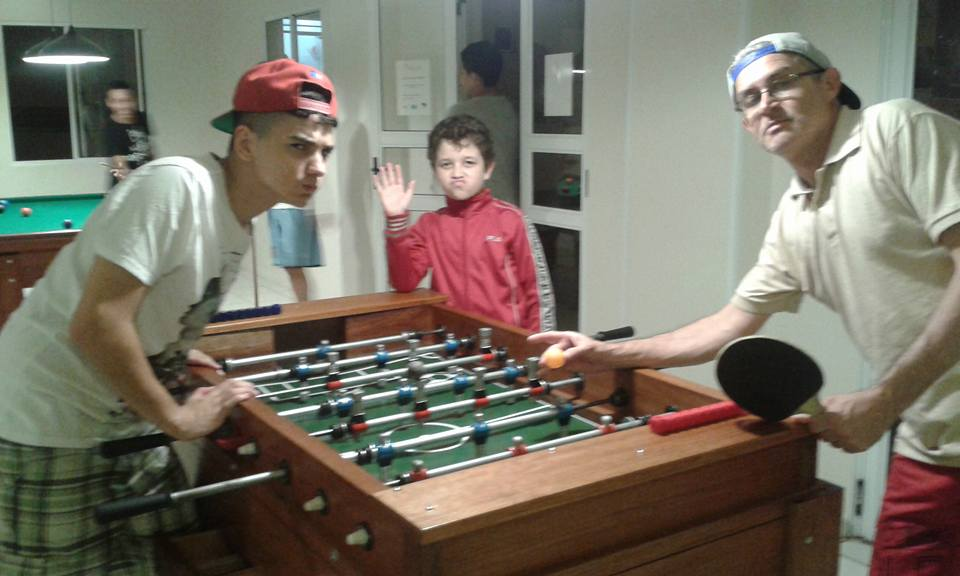
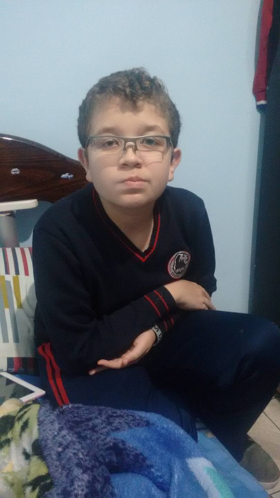
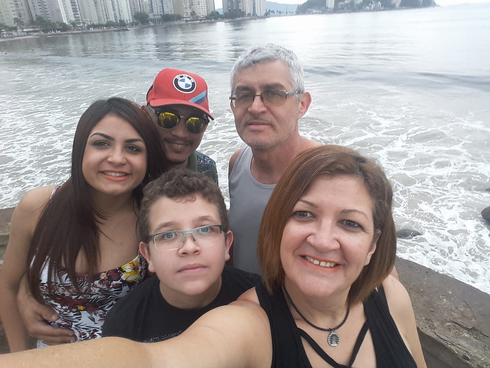
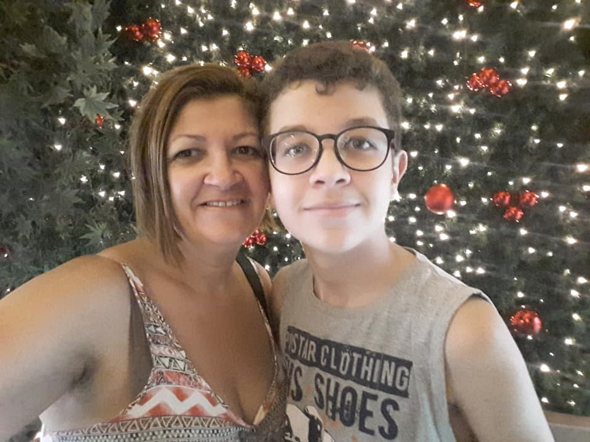
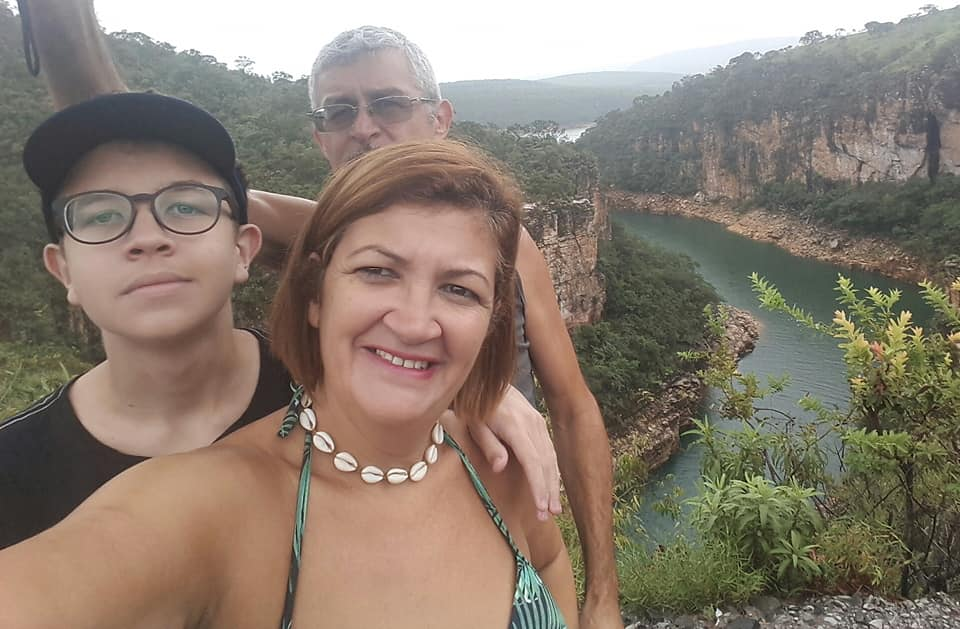
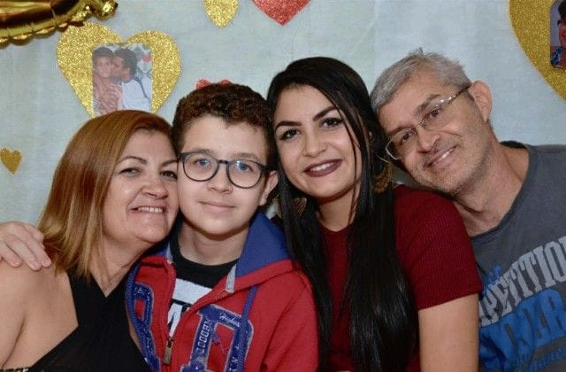
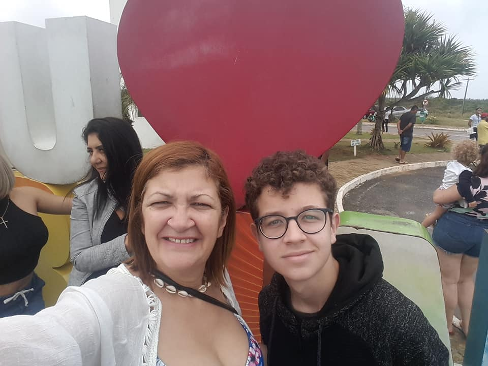

Entre 10 até hoje de idade tinha me tornado uma criança timida que não conversava muito, por causa da saida dos meus amigos da escola, logico que não posso culpa-los, mas do mesmo jeito me quebrava. Depois do 9ºano consegui entra na etec, um lugar, diz meu pai, tenso, monotono, pessoas serias, cheias de obrigação e trabalho. ai eu chego e vejo uns marmajos brincando de pipa, fala serio. Do Fidens pra Etec a minha personalidade mudou bastante, converso mais, tenho menos vergonha, parece que voltei aos 8 a 10 anos de idade. Etec é massa.
      